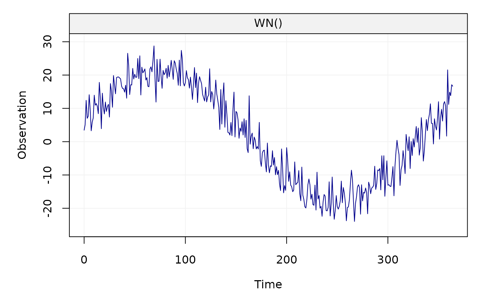
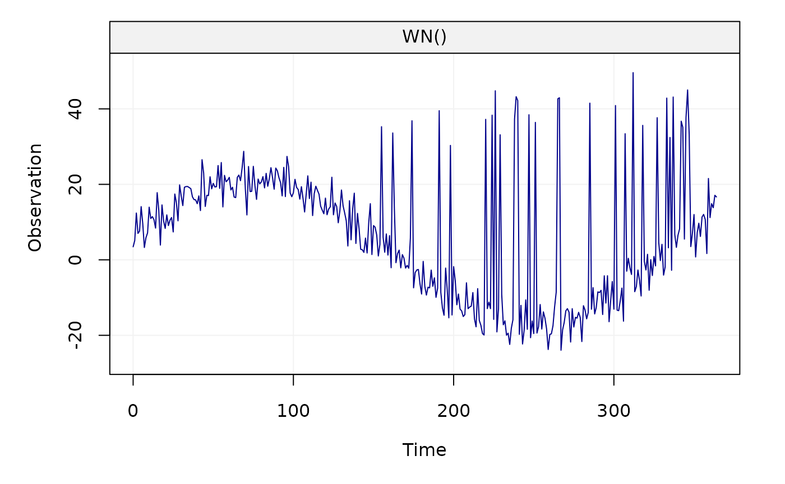

remove_outliers_hector.Rmd
phase = 0.45
amplitude = 2.5
sigma2_wn = 15
sigma2_powerlaw = 10
d = 0.4
bias = 0
trend = 5/365.25
cosU = amplitude*cos(phase)
sinU = amplitude*sin(phase)
# generate model
N = c(1, 7.5, 10, 15, 20)*365
# consider 2 year of data
n = N[1]
model_i = WN(sigma2 = sigma2_wn)
# define time at which there are jumps
jump_vec = c(100, 200)
jump_height = c(10, 20)
# define myseed
myseed=123
# set seed
set.seed(myseed)
# generate residuals
eps = simts::gen_gts(model = model_i, n= n)
# add trend, gaps and sin
A = gmwmx::create_A_matrix(1:length(eps), jump_vec, n_seasonal = 1)
# define beta
x_0 = c(bias, trend, jump_height, cosU, sinU)
# create time series
yy = A %*% x_0 + epsWe plot the generated time series
plot(yy)
We add extreme values in the signal
n_outliers = 30
set.seed(123)
id_outliers=sample(150:350, size = n_outliers)
val_outliers = rnorm(n = n_outliers, mean = max(yy)+10, sd = 5)
yy[id_outliers] = val_outliersWe plot the corrupted time series
plot(yy)
We create a gnssts object
# save signal in temp
gnssts_obj = create.gnssts(t = 1:length(yy), y = yy, jumps = jump_vec)We remove extreme values from the signal using removeoutliers function of Hector available by calling remove_outliers_hector()
clean_yy = remove_outliers_hector(x=gnssts_obj, n_seasonal = 1)We can compare the original and the signal with detected extreme values removed from the signal: